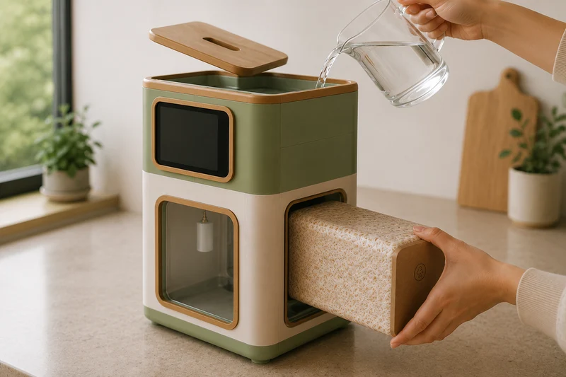

About the work
Growing products.
Made in Christchurch.
Mycelis and Verdeis are being developed to make growing at home feel more like using an appliance—and less like setting up specialist equipment.

The design goal
Bring the grow into the room.
Traditional home growing can mean bags, loose substrate, misting, shelving and equipment that lives out of sight.
These products take a different direction: enclosures with a clear place in the kitchen, built around the crop inside them.
Where things stand
In development means in development.
The hardware, growing formats and final details are still being refined. There is no published price or release date. This site will change as the products do.